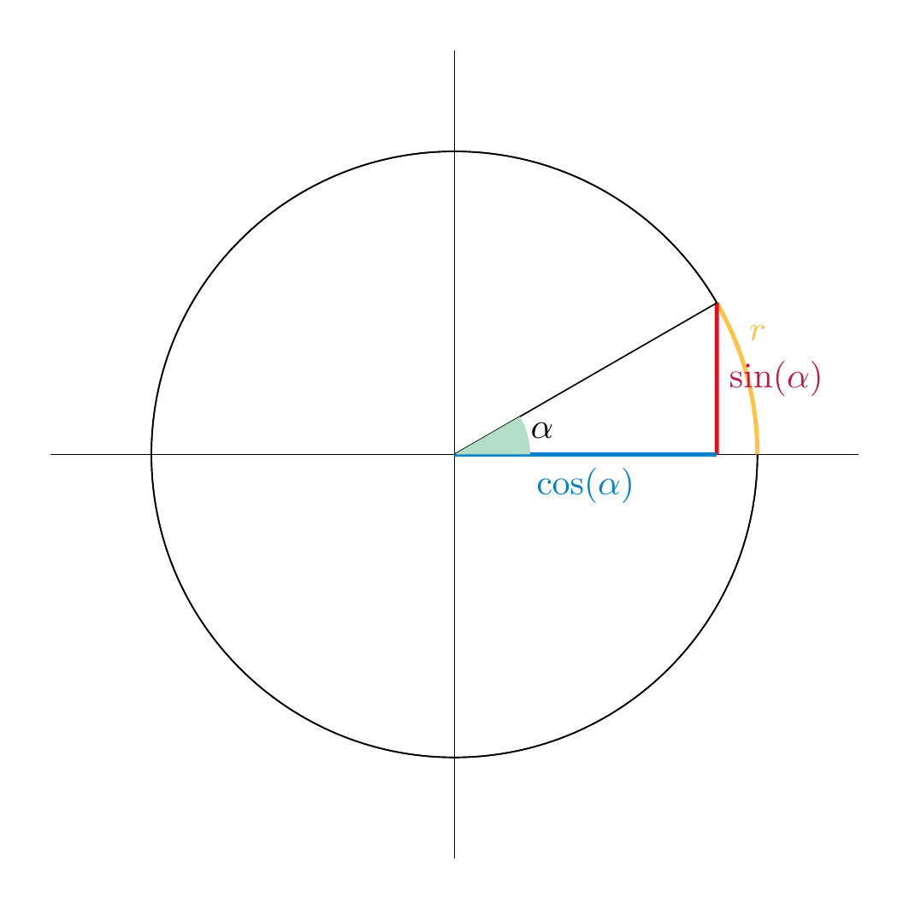
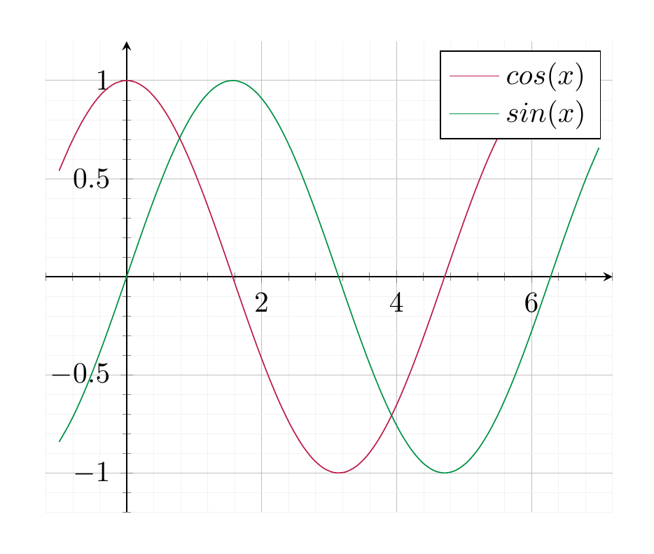

Mathematical notation and terminology¶
Sets¶
| Symbol | Reads | Explanation | Example |
|---|---|---|---|
| \(\{ \ \dots \}\) | a set | The elements of the set are written inside the braces. | \(\{1,2,3\}\) denotes the set consisting of the numbers 1, 2 and 3. |
| ${ \dots | \dots }$ | The set of all \(\dots\) satisfying the condition \(\dots\). | This denotes the set consisting of all objects satisfiying a certain condition. |
| \(\in\) | is an element of | If \(M\) is a set the expression \(x \in M\) means that \(x\) is a member of \(M\). | \(\diamondsuit \in \{ \diamondsuit, \heartsuit, \spadesuit, \clubsuit \}\) |
| \(\notin\) | is not an element of | If \(M\) is a set the expression \(x \in M\) means that \(x\) is a member of \(M\). | \(\diamondsuit \notin \{ \heartsuit, \spadesuit, \clubsuit \}\) |
| \(f : X \to Y\) | \(f\) from \(X\) to \(Y\) | A function \(f\) from a set \(X\) to another set \(Y\). | \(f : \{ \text{Monday}, \dots, \text{Sunday} \} \to \{ \text{true, false} \}\) is some function that assigns to any weekday either true or false. For example, \(f\) could indicate whether I go to school that day. |
| \(\to\) | to | The regular arrow is the symbol for a function. | |
| \(\mapsto\) | maps to | \(x \mapsto y\) indicates that a particular element \(x \in X\) is sent to (or “mapped to”) the element \(y \in Y\). | \(\text{Sunday} \mapsto \text{false}\) |
| \(X \times Y\) | The product of two sets \(X\) and \(Y\). | The product consists of pairs \((x, y)\), where \(x \in X\) and \(y \in Y\). | \(\{0, 1\} \times \{ 0, 1\} = \{(0,0), (0, 1), (1,0), (1,1)\}\). |
| \(X \subset Y\) | subset | \(X\) is a subset of \(Y\) if every element of \(X\) is also an element of \(Y\). | \(\{1, 2\} \subset \{0, 1, 2\}\) |
| \(X \subsetneq Y\) | proper subset | \(X\) is a proper subset of \(Y\) if \(X \subset Y\) but \(X \ne Y\) | \(\{1, 2\} \subsetneq \{0, 1, 2\}\) |
| \(X \cap Y\) | intersection of \(X\) and \(Y\) | The intersection consists of those elements that are contained in \(X\) and in \(Y\). \(\{0, 1\} \cap \{-1, 0\} = \{ 0 \}\) | |
| \(X \cup Y\) | union of \(X\) and \(Y\) | The union consists of those elements that are contained in \(X\) or in \(Y\). \(\{0, 1\} \cap \{-1, 0\} = \{-1, 0, 1 \}\) | |
| \(g \circ f\) | composition | If \(f : X \to Y\) and \(g : Y \to Z\) are two functions, then \(g \circ f: X \to Z\) is the function sending \(x \in X\) to \(g(f(x))\). |
Logic¶
| Symbol | Reads | Explanation | Example |
|---|---|---|---|
| \(\Rightarrow\) | Implies | If \(A\) and \(B\) are two (mathematical) statements, then “\(A \Rightarrow B\)” means that if \(A\) holds then \(B\) also holds. | \(x \ge 1 \Rightarrow x^2 \ge 1\) |
| \(\Leftrightarrow\) | Equivalent | If \(A\) and \(B\) are two mathematical statements, then “\(A \Leftrightarrow B\)” is an abbreviation for \(A \Rightarrow B\) and (at the same time) \(B \Rightarrow A\). | \(x \ge 0\) \(\Leftrightarrow\) \(x + 1 \ge 1\) |
| \(:=\) | is defined to be | \(x := 2\) means that we define the variable \(x\) to take the value 2 | |
Numbers and arithmetic¶
| Symbol | Reads | Explanation | Example |
|---|---|---|---|
| \({{\bf Z}}\) | The set of all integers. | \(-34, -1, 0, 1, 2, 18, \dots \in {{\bf Z}}\), \(\frac 3 4 \notin {{\bf Z}}\) | |
| \({{\bf Q}}\) | The set of all rational numbers. | \(\frac {-3}{16}, -3.3, -1, 0, 2.4, \frac 3 4 \in {{\bf Q}}\), \(\sqrt 3 \notin {{\bf Q}}\) | |
| \({\bf R}\) | The set of all real numbers. | 0, 1, \(-1\), \(\frac 1 2\), \(\sqrt 3\), \(\pi\), \(e \in {\bf R}\) | |
| \(\sum_{e=1}^n a_e\) | Sum | This is an abbreviation for the sum of the \(a_e\), where \(e\) runs from 1 to \(n\). (Here \(a_e\) can be any expression depending on \(e\).) It can also be written as \(a_1 + a_2 + \dots + a_e\). | \(\sum_{e=1}^3 e^2 = 1^2 + 2^2 + 3^2 = 14\). |
Trigonometric functions¶
Angles can be measured in degrees or in radians. These are converted as follows:
| angle | radian |
|---|---|
| (in degree) | (no unit) |
| \(180^\circ\) | \(\pi\) |
| \(90^\circ\) | \(\frac \pi 2\) |
| \(\alpha\) | \(\frac{\pi}{180} \alpha\) |
| \(\frac {180}\pi r\) | \(r\) |
Geometrically, given an angle \(\alpha\) (between 0 and \(360^\circ\) as in the picture below), the radian is the length of the yellow circle segment as shown:

A rotation by a positive number is counter-clockwise; conversely negative numbers correspond to a clockwise rotation. For example, a rotation by \(\frac \pi 2\) is a counter-clockwise rotation by \(90^\circ\). A rotation by \(-\frac \pi 4\) is a clockwise rotation by \(45^\circ\).
Given any radian \(r\), the ray that has an angle \(r\) between itself and the positive \(x\)-axis meets the circle with radius 1 and mid-point \((0,0)\) in exactly one point \(p\). The trigonometric functions \(\sin\) and \(\cos\) are defined to be the coordinates of that point:
For example, we have the following values
| \(r\) | 0 | \(\pi/6\) (30°) | \(\pi/4\) (45°) | \(\pi/3\) (60°) | \(\pi/2\) (90°) | \(\dots\) |
|---|---|---|---|---|---|---|
| \(\sin(r)\) | 0 | \(\frac 12\) | \(\sqrt 2\) | \(\frac {\sqrt 3}2\) | 1 | \(\dots\) |
| \(\cos(r)\) | 1 | \(\frac {\sqrt 3} 2\) | \(\sqrt 2\) | \(\frac 12\) | 0 | \(\dots\) |
